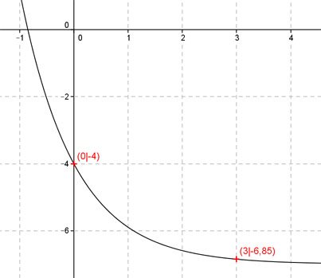

Aufgabe 110 Ergänzen Sie die Wertetabelle für den Graphen: y = 3e-x - 7 x 0 3 y -4 -6,85 y = f(3) = 3e-3 - 7 = 0,15 - 7 = -6,85 gerundet f(x) = -4 eingesetzt: -4 = 3e-x - 7 |+7 3 = 3 * e-x |:3 1 = e-x Logarithmiert: -x = ln 1 -x = 0 |:(-1) x = 0 